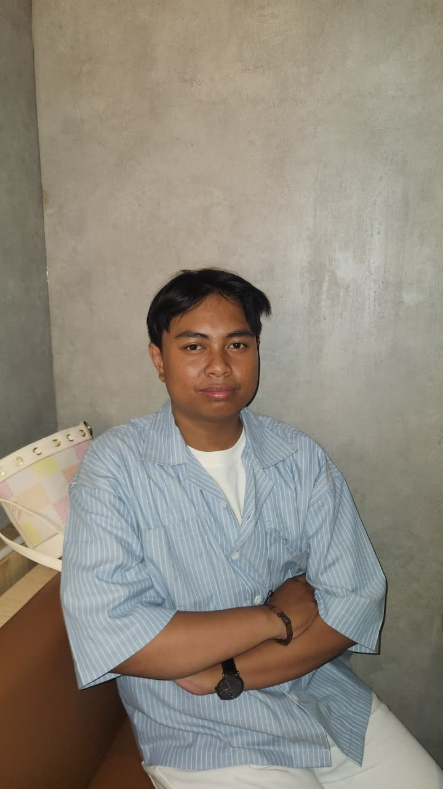

01 / FEATURED PROJECT
SIMADA
↗A digital document management platform combining role-based access, OCR, information retrieval and searchable records.
Hello, I'm Ziddan Ilmy Nazzarin
An Informatics Engineering graduate turning ideas into intuitive web experiences, practical systems, and solutions that make work easier.
01 / SELECTED WORK
Projects where technology meets tangible problems. Thoughtful systems, functional interfaces, and real-world applications.
A digital document management platform combining role-based access, OCR, information retrieval and searchable records.
Document storage, verification and approval workflows with a finite-state model for clear status tracking.
A responsive product catalog and e-commerce interface supporting categories, inventory data and product discovery.
Want to dig deeper into the code?
EXPLORE ALL REPOSITORIES02 / BEHIND THE SCREEN

I’m Ziddan, an Informatics Engineering graduate from Politeknik Negeri Samarinda. My interests live at the intersection of technology, business, and human experience.
From developing web applications and managing databases to IT support and customer-facing work, I enjoy understanding the problem behind the request — then building something useful around it.
I'm looking for opportunities to contribute technical thinking, teamwork and a willingness to keep learning.
03 / TOOLKIT & CAPABILITIES
A combination of coding, structured problem-solving, and people skills that supports work from idea to delivery.
Building adaptive, practical experiences across interfaces and back-end systems.
Organizing information, database operations, and document search workflows.
Helping systems and people work smoothly through technical troubleshooting.
Tracking changes, organizing project work, and maintaining source code.
Designing responsive layouts with familiar, maintainable front-end tooling.
Connecting technical needs with customer support, collaboration and clear communication.
04 / THE JOURNEY
A growing path across technology, education and hands-on customer-facing work.
CV Sehati Komputer · Samarinda
Customer assistance, technology product recommendations, marketing support, and daily store operations.
CV Sehati Komputer · Samarinda
Supported IT operations and developed a product catalog and e-commerce web application.
Politeknik Negeri Samarinda · GPA 3.69
Studied programming, database management, web applications and information systems.
PT Lintasmaya Multi Media · Samarinda
Assisted with hardware, networking, basic maintenance and technical operations.
SMK Negeri 1 Samarinda
Computer hardware, networking fundamentals, IT support and cybersecurity activities.
05 / LEARNING & RECOGNITION
Credentials and achievements along the way — from technical competency to robotics and cybersecurity.
2024 — Bina Akrab Teknologi Informasi, Himpunan Mahasiswa Teknologi Informasi
2023 — Sistem Jaringan Komputer, LPK Borneo Samarinda
2023 — OMARU Politeknik Negeri Samarinda
2021 — SMAKENSA KRC, Kontes Robot Cerdas
2021 — Kontes Robot Cerdas Tingkat Pelajar, Politeknik Negeri Samarinda
06 / WHAT'S NEXT?
Got an opportunity, collaboration, or idea?
I'd love to hear about it.